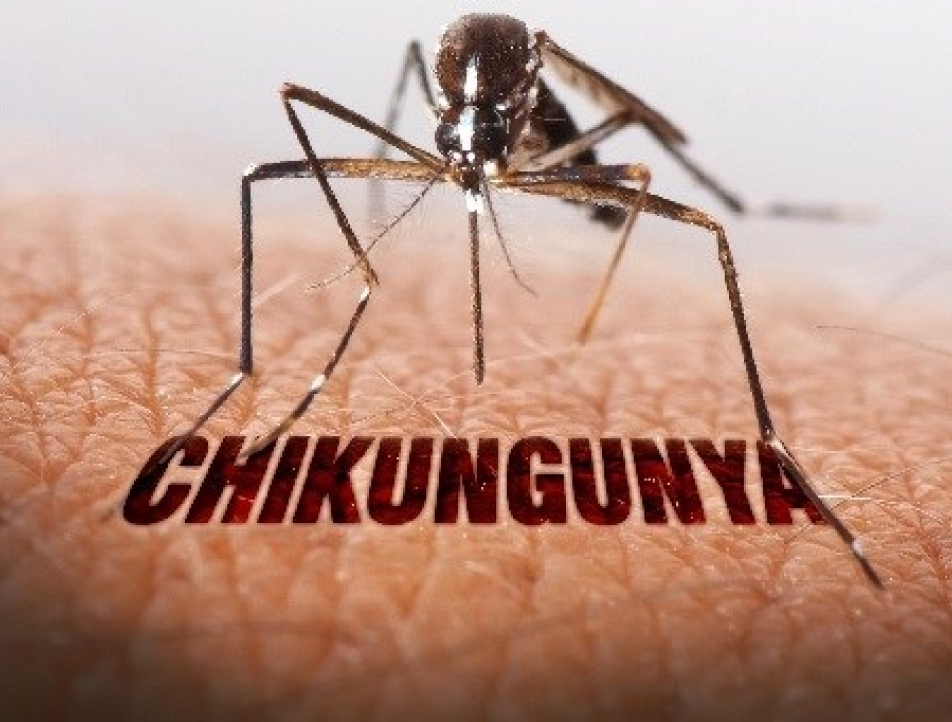
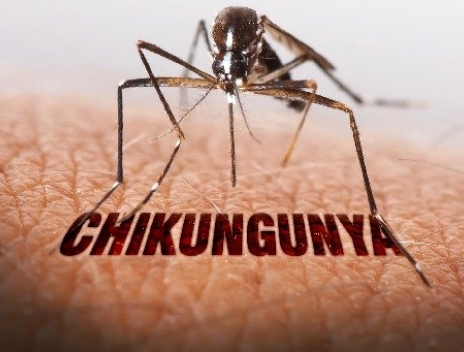

Chikungunya is a mosquito-borne viral disease caused by the
chikungunya virus (CHIKV), an RNA virus in the alphavirus genus of
the family Togaviridae. The name chikungunya derives from a word
in the Kimakonde language, meaning “to become contorted
Chikungunya

Causes and Symptoms:
- Causes: Chikungunya is a mosquito-borne viral disease caused by the chikungunya virus (CHIKV), an RNA virus in the alphavirus genus of the family Togaviridae. The name chikungunya derives from a word in the Kimakonde language, meaning “to become contorted
- Symptoms: CHIKV disease onset is typically 4–8 days (range 2–12 days) after the bite of an infected mosquito. It is characterized by an abrupt onset of fever, frequently accompanied by severe joint pain. The joint pain is often debilitating and usually lasts for a few days but may be prolonged, lasting for weeks, months or even years. Other common signs and symptoms include joint swelling, muscle pain, headache, nausea, fatigue and rash. Since these symptoms overlap with other infections, including those with dengue and Zika viruses, cases can be misdiagnosed. In the absence of significant joint pain, symptoms in infected individuals are usually mild and the infection may go unrecognized.